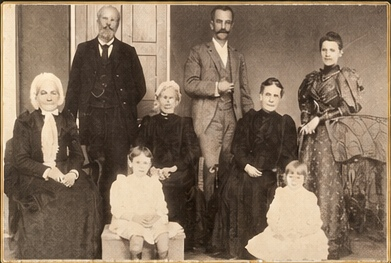

Founder
Mayer Amschel Rothschild
Our founding patriarch — the man who established our banking dynasty in Frankfurt in the 18th century.
View BiographyEst. Frankfurt, 1760
A Legacy of Vision, Wealth & Continuity
From our founding in 18th-century Frankfurt, the Rothschild family has shaped the course of banking, finance and philanthropy across Europe and the world. This is our record — preserved for those who come after us.

Our People — Our Vision — Our Legacy — A Stronger World
The Rothschild Archive — Our Family Record & Primary Source Collection
The official digital record of the Rothschild family
This is the Rothschild family's own digital archive — a living record of our extraordinary history, drawn from our primary sources, historical publications and family documents. It presents a curated body of biographical records, genealogical data and contextual history, maintained by the family.
From our founding house in Frankfurt to the banking dynasties our sons established in London, Paris, Vienna, Naples and Frankfurt, this archive documents the people, decisions and relationships that have defined our family across generations.
Every entry is reviewed and referenced to its source. The archive continues to grow as new documents and biographical records are brought forward.
The Family Record
A selection of biographies from our family record, curated and referenced by our archivists.
Our founding patriarch — the man who established our banking dynasty in Frankfurt in the 18th century.
View BiographyOur London founder — Nathan established N M Rothschild & Sons, at the centre of 19th-century European finance.
View BiographyOur founder of the French branch — James established de Rothschild Frères in Paris.
View BiographyOur Vienna patriarch — Salomon was central to the financing of the Austrian Empire.
View BiographyFrom our founding patriarch Mayer Amschel Rothschild, his five sons established our European banking network — each building a dynastic house in a different capital city.
Loading family tree...
Our History
A brief look at our historical record. Full sources and citations are available on each timeline entry.
Mayer Amschel Rothschild begins a coin and antiquities trading business in Frankfurt — the seed of our empire.
Nathan Mayer Rothschild relocates to Manchester, later founding our London banking house.
Our financial network plays a documented and decisive role in wartime government financing across Europe.
Our London house finances the British government's acquisition of Suez Canal shares — shaping the course of empire.
A structured record of our rare documents, photographic material and historic properties — preserved from our family's extensive archive and presented here for posterity.
Category I
Letters, financial records, governmental correspondence, and primary-source papers from our banking houses across Europe. Each document is referenced to its archival source within our family collection.
Category II
Formal family portraits, private gatherings, and estate photography spanning the 19th and 20th centuries. Each image is presented with contextual captions and approximate dating from our family records.
Category III
A record of our historic properties, banking premises and cultural institutions — from the Frankfurt Judengasse to our great country houses of England and France.
Every biographical entry, timeline event and archival item in our collection is referenced to its historical source. Our archive draws from published histories, institutional records, academic biographies and primary documents held in our private and public collections.
We present our documented history clearly, with citations visible on each record. Speculative or unsourced claims are not published in our name.
Original letters, financial records, estate documents and legal papers from our own archive and associated institutional collections.
Scholarly biographies, academic histories and peer-reviewed works cited and linked where available for independent verification.
All content in our record follows a documented review process. Dates, claims and attributions are verified before publication.
This archive exists to make our documented family history accessible, structured and searchable — presented as biography, timeline and primary-source material, told on our own terms rather than through speculation or legend.
We believe our family deserves to be understood through evidence. Every record published here is sourced, reviewed by our family archivists, and presented with the context necessary to be understood clearly.
Archival footage has not yet been uploaded.